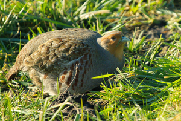
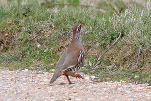
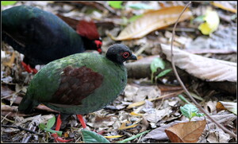
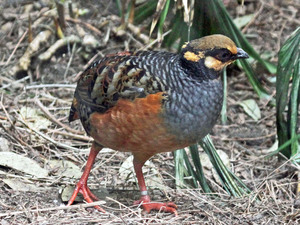
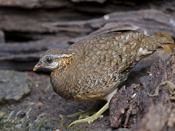

ⲕⲁⲡⲁⲓ, ϭⲁⲡⲉⲓ (?) S, ⲕⲁⲫⲁⲓ B nn, partridge: K 168 B قطا (which P 44 56 = φασιανόν). S only as name: BM 448, MR 5 36, Ryl 132, & in BG 42 ⲫⲟ ⲛϭⲁⲡⲉⲓ (if same).
(noun)
species
partridge, Egyptian partridge





1: partridge, 2: Egyptian partridge
complete
114a
130a
ⲕⲁⲫⲁⲓ B nn as pl, Egyptian partridge: K 168 ⲛⲓⲕ. قطاء (which P 44 56 S = φασιανόν). V AZ 30 26.
825a
ϭⲁⲡⲉⲓ v ⲕⲁⲡⲁⲓ & ϭⲟⲡⲉ.